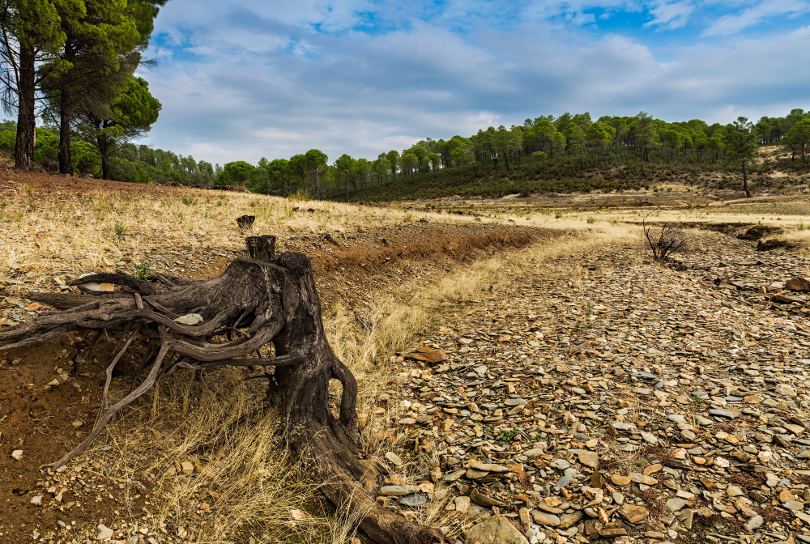

O Cerrado passou a ser degradado intensivamente com o avanço da ocupação humana. Para auxiliar na conservação da biodiversidade do Cerrado, programas brasileiros, como o Projeto de Monitoramento do Desmatamento (PRODES) e o Sistema de Detecção e Desmatamento em Tempo Real (DETER), têm sido propostos para quantificar desmatamentos. Buscando a compreensão da resposta espectro-temporal da vegetação e a semi-automatização da detecção de distúrbios (desmatamento e fogo) nas formações campestre, florestal e savânica do Cerrado, a presente pesquisa busca avaliar a detecção de desmatamento e de áreas queimadas neste bioma utilizando redes Convolutional Long Short-Term Memory (ConvLSTM), treinadas e testadas com imagens do sensor MultiSpectral Instrument (MSI)/Sentinel-2, e comparadas com a classificação gerada pelo Random Forest.